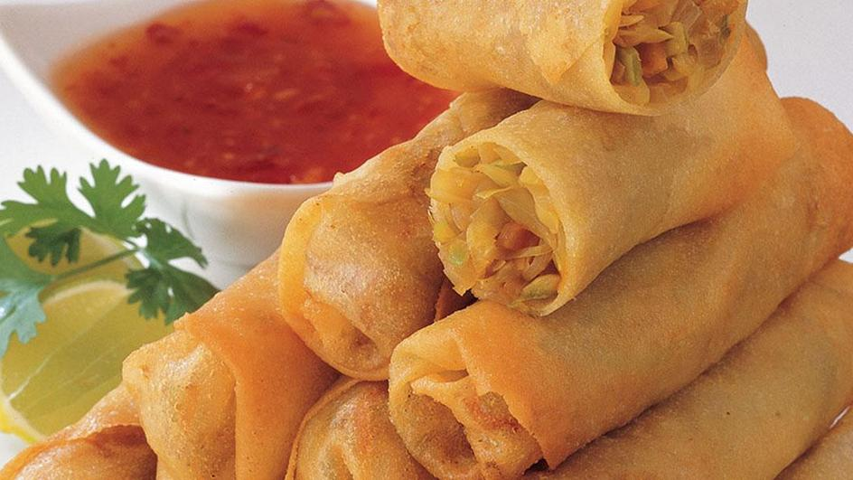

Fried Spring Rolls
Ingredients
- ¼ cup dried wood ear mushroom ½ oz/15g
- 1 oz dried rice noodles
- 2 shallots
- 1 carrot
- ½ lb ground pork 225g
- ½ teaspoon salt
- ½ teaspoon pepper
- 12 spring roll wrappers
- ½ cup soybean oil
For Nuoc Cham
- ½ red chili small, or more/less to taste
- ½ clove garlic
- 2 tablespoon water
- 1 ½ tablespoon lime juice
- 1 tablespoon fish sauce
- ½ tablespoon sugar
- ⅛ teaspoon salt
How to Make this Fried Spring Roll
- Place the wood ear mushrooms and rice noodles in small bowls and cover both with hot water.
Leave each to sit until the mushrooms expand and the noodles become white, around 5-10 minutes for each.
Drain both and chop the mushrooms finely and the noodles into small lengths.
- As the mushrooms and noodles are soaking, finely chop the shallots and peel and grate the carrot.
- Mix together the ground pork, mushrooms, noodles, shallots, carrot, salt, pepper and sugar.
Use your hands if necessary to mix well (they may not all completely stick together but that's fine).
Divide the mixture into 12 relatively equal pieces.
- Lay one spring roll wrapper on a clean surface with a corner pointing towards you.
Have a small bowl of water ready next to you. Fold over the nearest corner of the wrapper inwards to almost the
middle of the wrapper and then put one portion of the filling on top in a small log cross-wise near the folded edge.
- Fold in both sides to just be covering the end of the log and so the folds formed are parallel with each other.
Fold the first folded edge over the filling, making sure the sides stay folded in to avoid the filling from escaping,
and keep rolling up until only a triangle is left. Try to avoid having much air inside as you roll.
- Dampen the tip of your finger and moisten the edges of the remaining triangle of the wrapper then
keep rolling so that the end of the wrapper sticks flat onto the roll. Repeat with the rest of the wrappers and filling.
- Warm the oil in a skillet over a medium-high heat. Add the rolls to the oil and cook for around 2-3 minutes
on each side until they are golden all over. Remove from the skillet and drain on kitchen paper.
Repeat to cook the rest of the rolls, topping up the oil as needed.
For Nuoc Cham
- Finely chop the chili and garlic. Combine all ingredients (water, lime, fish sauce, chili, garlic, sugar and salt)
and stir so that the sugar dissolves. Use as a dipping sauce for the spring rolls - traditionally you wrap a roll in a
lettuce leaf, along with a couple stems of herbs, before dipping.
Cooking Tips for Fried Spring Rolls
- Look for the thin spring roll wrappers, not the thicker egg roll wrappers for these.
- Wood ear mushrooms can also be called black fungus and are sold as shredded, dried pieces.
- Traditionally, these are cooked in a wok-style pan and more deep fried, which you can do if you prefer.
Just use a larger quantity of oil if you do, and you will probably only need to turn once. If more shallow frying,
as described above, you just need a thin layer of oil in the skillet and may need to turn two or three times to
get all sides